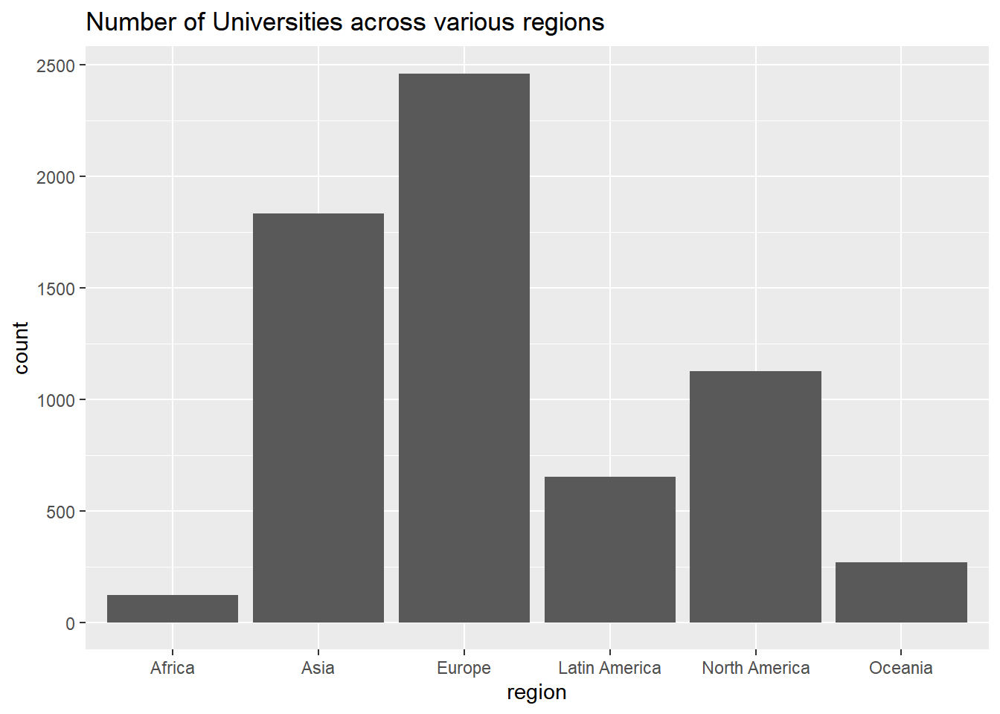
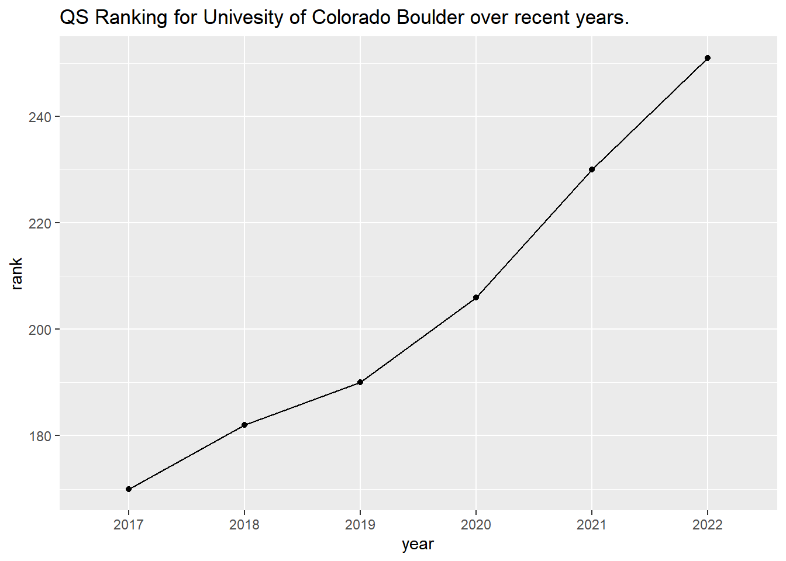
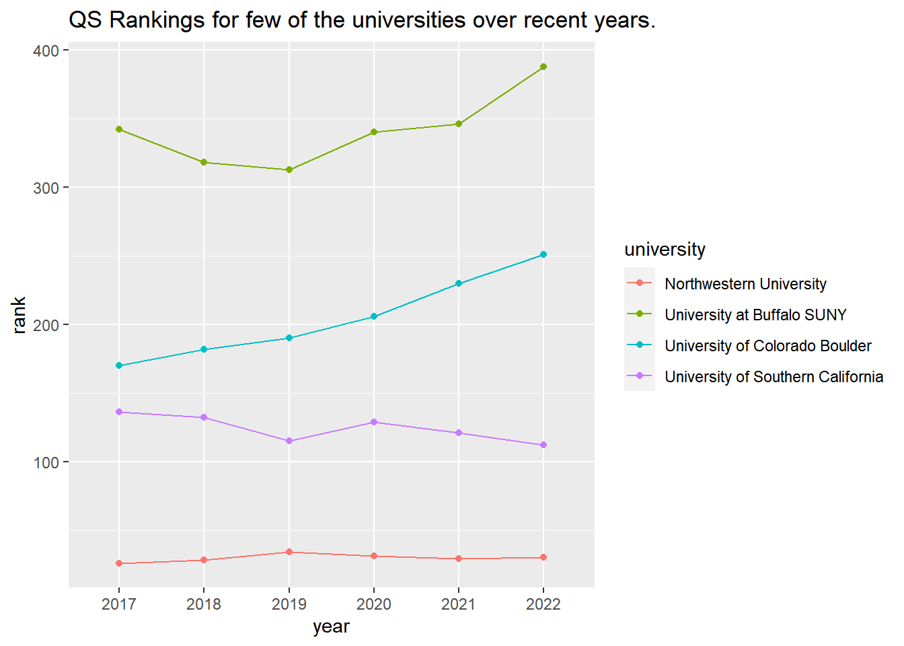
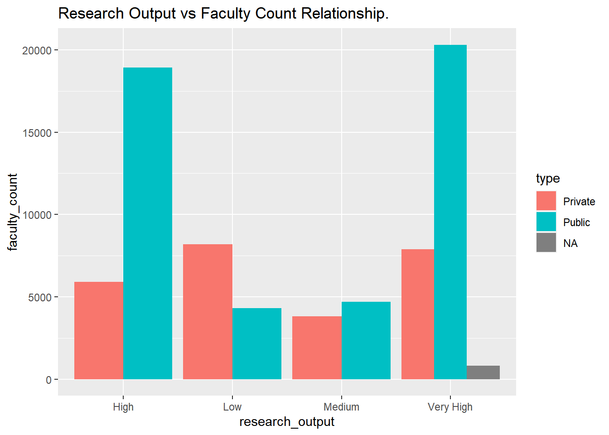
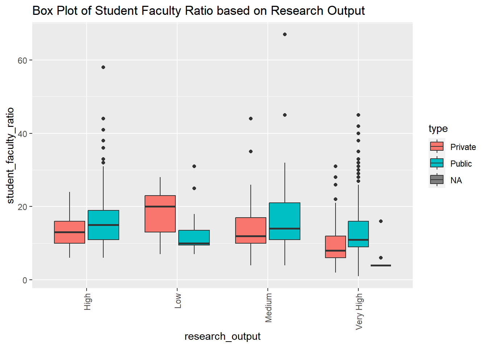

# install.packages("devtools", dependencies = TRUE)
# devtools::install_github("ldurazo/kaggler")
# install.packages("tidyverse", dependencies = TRUE)
# install.packages("ggplot2", dependencies = TRUE)Analysis on QS University Rankings
Data Science in the field of Education
Team Members:
VINEETH BASANI, viba2330@colorado.edu
AMITH NANDIVADA, vena9865@colorado.edu
SAI KUMAR MADDULA, kama3465@colorado.edu
AKITHA PINISETTI, akpi9370@colorado.edu
RISSHIKAA YANTRAPATI, riya9665@colorado.edu
KUSHWANTH SAI LALAM, kula2453@colorado.edu
About the dataset:
What are QS Rankings and how are they calculated?
Quacquarelli Symonds publishes its global university rankings every year in the form of the QS World University Rankings. One of the top three most popular university rankings in the world, the QS ranking is approved by the International Ranking Expert Group (IREG) and is published annually. QS releases its rankings of universities in collaboration with Elsevier.
QS designed its rankings to assess performance according to what it believes to be key aspects of a university’s mission: teaching, research, nurturing employability, and internationalization. The methodological framework it follows assess universities based on six metrics:
- Academic Reputation (40%)
- Employer Reputation (10%)
- Faculty/Student Ratio (20%)
- Citations per faculty (20%)
- International Faculty Ratio (5%)
- International Student Ratio (5%)
- Academic Reputation (40%)
Problem Statement:
We wanted to analyze how Universities have fared world-wide based on the QS rankings and wanted to get answers to the below questions
- What is the significance of academic research to a university?
- What attributes define the top universities?
- Is the dataset biased?
Content present in the dataset:
The dataset contains 15 columns in total which gives information about - name of the university, year of ranking, rank given to the university, score of the university based on the six key metrics (i.e., academic reputation, employer reputation, citations per faculty, student-to-faculty ratio, international faculty ratio and international student ratio), link to the university profile page on QS website, country in which the university is located, city in which the university is located, region in which the university is located, link to the logo of the university, type of university (public or private), quality of research at the university, number of students assigned to per faculty, number of international students enrolled at the university, size of the university in terms of area, number of faculty or academic staff at the university.
Resources:
QS World University Rankings 2017 - 2022 data-set on Kaggle.
Code:
Dependency Packages:
We have used Kaggle API to extract the data-set. Un-comment and run the below dependency packages before you run the code. Ignore if you already have the packages installed.
NOTE: Please resolve the dependency issues in case an error arises due to SSL connection issue. Try installing the missing packages to resolve any other errors while running the below commands. If you still face any issue with the installation of devtools, please download the dataset and run the code. Refer data folder in the git-hub repository for the dataset.
Libraries to be imported:
library(readr)
library(kaggler)
library(ggplot2)
library(tidyverse)── Attaching packages ─────────────────────────────────────── tidyverse 1.3.2 ──
✔ tibble 3.1.8 ✔ dplyr 1.0.10
✔ tidyr 1.2.1 ✔ stringr 1.4.1
✔ purrr 0.3.5 ✔ forcats 0.5.2
── Conflicts ────────────────────────────────────────── tidyverse_conflicts() ──
✖ dplyr::filter() masks stats::filter()
✖ dplyr::lag() masks stats::lag()Data Extraction:
kgl_auth(username="vineethreddi",key="f39f90e2cb1a8da2a58c0b63bba271a8")Your Kaggle key has been recorded for this session and saved as `KAGGLE_PAT`
environment variable for future sessions.<request>
Options:
* httpauth: 1
* userpwd: vineethreddi:f39f90e2cb1a8da2a58c0b63bba271a8response <- kgl_datasets_download_all(owner_dataset = "padhmam/qs-world-university-rankings-2017-2022")
download.file(response[["url"]], "temp.zip", mode="wb")
unzip_result <- unzip("temp.zip", exdir = "data/", overwrite = TRUE)
df <- read_csv("data/qs-world-university-rankings-2017-to-2022-V2.csv")Rows: 6482 Columns: 15── Column specification ────────────────────────────────────────────────────────
Delimiter: ","
chr (10): university, rank_display, link, country, city, region, logo, type,...
dbl (3): year, score, student_faculty_ratio
num (2): international_students, faculty_count
ℹ Use `spec()` to retrieve the full column specification for this data.
ℹ Specify the column types or set `show_col_types = FALSE` to quiet this message.df# A tibble: 6,482 × 15
university year rank_…¹ score link country city region logo type resea…²
<chr> <dbl> <chr> <dbl> <chr> <chr> <chr> <chr> <chr> <chr> <chr>
1 Massachus… 2017 1 100 http… United… Camb… North… http… Priv… Very H…
2 Stanford … 2017 2 98.7 http… United… Stan… North… http… Priv… Very H…
3 Harvard U… 2017 3 98.3 http… United… Camb… North… http… Priv… Very H…
4 Universit… 2017 4 97.2 http… United… Camb… Europe http… Publ… Very h…
5 Californi… 2017 5 96.9 http… United… Pasa… North… http… Priv… Very H…
6 Universit… 2017 6 96.8 http… United… Oxfo… Europe http… Publ… Very H…
7 UCL 2017 7 95.6 http… United… Lond… Europe http… Publ… Very H…
8 ETH Zuric… 2017 8 94.2 http… Switze… Züri… Europe http… Publ… Very H…
9 Imperial … 2017 9 94.1 http… United… Lond… Europe http… Publ… Very H…
10 Universit… 2017 10 93 http… United… Chic… North… http… Priv… Very H…
# … with 6,472 more rows, 4 more variables: student_faculty_ratio <dbl>,
# international_students <dbl>, size <chr>, faculty_count <dbl>, and
# abbreviated variable names ¹rank_display, ²research_outputPre-Processing the Data:
- Checking total number of rows and columns in the data.
nrow(df)[1] 6482ncol(df)[1] 15- Checking for Null values in the data.
lapply(df, function(x) { length(which(is.na(x)))})$university
[1] 0
$year
[1] 0
$rank_display
[1] 68
$score
[1] 3662
$link
[1] 0
$country
[1] 0
$city
[1] 178
$region
[1] 0
$logo
[1] 0
$type
[1] 12
$research_output
[1] 2
$student_faculty_ratio
[1] 75
$international_students
[1] 164
$size
[1] 2
$faculty_count
[1] 78Out of the 15 columns, we have missing values in 9 columns which is more than half of the total number of columns.
Hence, we have decided to drop rows that have more than 4 missing values across various columns to perform better analysis on our data.
df$na_count <- apply(df, 1, function(x) sum(is.na(x)))
df<- df[df$na_count<=4,]- Dropping ‘link’ and ‘logo’ column as they are hyperlinks.
df <- subset(df, select = -c(link,logo))- Converting the ‘international_students’, ‘faculty_count’ and ‘rank_display’ column to numerical by removing all the special characters in them.
df$international_students <- as.numeric(gsub('_', '', df$international_students))
df$faculty_count <- as.numeric(gsub('_', '', df$faculty_count))
df$rank<- as.numeric(gsub('-\\w+','',df$rank_display))
df$research_output <- gsub('Very high','Very High',df$research_output)- Converting ‘Year’ Column datatype to character.
df$year<-as.character(df$year)Exploratory Data Analysis:
ggplot(data=df, aes(x=region)) + geom_bar() + ggtitle("Number of Universities across various regions")
- Europe tends to be the continent with more number of universities though we have to consider the fact that they have included Russia in Europe although it belongs to both Europe and Asia. It is followed by Asia and North America.
ucb <- df[df$university %in% c("University of Colorado Boulder"),]
ggplot(data=ucb, aes(x=year, y=rank, group = 1)) + geom_line() + geom_point() + ggtitle("QS Ranking for Univesity of Colorado Boulder over recent years.")
- As we can see here, the QS ranking of University of Colorado Boulder has been decreasing gradually every year. In 2017 it is was ranked 150 but in 2022 it is ranking around 250.
universities <- df[df$university %in% c("University of Colorado Boulder", "Northwestern University", "John Hopkins University", "University of Southern California", "University at Buffalo SUNY"),]
ggplot(data=universities, aes(x=year, y=rank,group=university,color=university)) + geom_line() + geom_point() + ggtitle("QS Rankings for few of the universities over recent years.")
- Among 4 universities - Northwestern University, University at Buffalo SUNY, University of Colorado Boulder and University of Southern California only University of Southern California followed the increasing trend in QS ranking. The QS ranking of Northwestern University has been following a constant trend while in the case of University of Colorado Boulder and University at Buffalo SUNY the QS ranking has been following a declining trend.
ggplot(df, aes(x=score, y=student_faculty_ratio)) + geom_point() + ggtitle("Scatter Plot for student_faculty_ratio and score.")Warning: Removed 3665 rows containing missing values (`geom_point()`).- From the above scatter plot, we can infer the relationship between student_faculty_ratio and QS score. There is slightly negative correlation between student_faculty_ratio and score.
- The universities that had higher score had less student to faculty ratio. That means, there are more number of faculty for a given set of students in universities that were rated higher in QS rankings.
Problem Statement Analysis:
- Fetching the data of Top 100 ranked universities
top_univ<-df[df$rank %in% c(1:100),]- Next to teaching, Academic research is viewed as a very important factor. Understanding research output can give us insights about how the top universities prioritize them.
ggplot(top_univ, aes(research_output, fill =type)) + geom_bar(stat="count", position = "dodge") + ggtitle("Research Output distribution for top 100 ranked universities.")
- From the above graph, we can infer that the quality of research at top 100 universities is very high.
- Also, there are significantly higher number of public universities than private universities in top 100 QS rankings.
- Based on the analysis performed above using the top 100 QS ranked universities, we can derive an important insight that the research output is very high.
- Hence, we will be using this factor in our further investigation on the entire dataset below to identify the other key metrics that are common in the top universities.
ggplot(df, aes(research_output, y=faculty_count,fill =type)) + geom_bar(stat="identity",position = "dodge") + ggtitle("Research Output vs Faculty Count Relationship.")Warning: Removed 56 rows containing missing values (`geom_bar()`).
- The graph above depicts the relationship between the quality of research at the university and the number of faculty members.
- When the number of faculty members is high, the quality of research is high and very high for public universities, whereas the quality of research is low even when the number of faculty members is high at the private universities.
ggplot(data=df,mapping=aes(x=research_output,y=student_faculty_ratio,fill=type))+ geom_boxplot() + theme(axis.text.x = element_text(angle = 90, vjust = 0.5, hjust=1)) + ggtitle("Box Plot of Student Faculty Ratio based on Research Output")Warning: Removed 53 rows containing non-finite values (`stat_boxplot()`).
- According to the above box-plot, the average student-to-faculty ratio across all universities is between 10 and 20.
- We can see that the research output is high when the student faculty ratio is higher at public universities.
Finding Bias in the dataset:
bias_in_score = sum(is.na(df$score))*100/nrow(df)
bias_in_score[1] 56.34675- From the above code snippet, we can see that the column score has more than 50% of the values missing for the given universities.
bias <- as.data.frame(table(df[is.na(df$score),]$rank))
ggplot(bias, aes(x = Var1, y = Freq)) + geom_bar(stat = "identity") + theme(axis.text.x = element_text(angle = 90, vjust =0.5,hjust=1)) + xlab("QS Ranking") + ylab("Total Number of Missing Values") + ggtitle("Bias in score column for lower ranked universities")- From the above visualization, we can observe that for the universities that are ranked low, the scores are missing.
- Hence, we cannot use this column as means of measure while taking into consideration the ranking of universities.
Conclusion:
From the above analysis, we can answer the key questions that we have specified in the above problem statement. Using top 100 QS ranked universities data, a vital conclusion is derived that the research output is quite high. Hence, we can state that the academic research plays a significant role for a university to rank higher.
We can expect a higher quality level of research when the student faculty ratio is high, which implies, when the student faculty ratio is high, the academic research output is also high. This trend can be clearly noticed through the visualizations we have carried out for various public and private universities.
Based on the above conclusions, we can say that academic research, student faculty ratio and type of university play a vital role in QS rankings. Also, we noticed that the dataset can be biased if we use the score column while identifying how well the universities have fared all over the world. This analysis can be useful for students in deciding which university to attend.